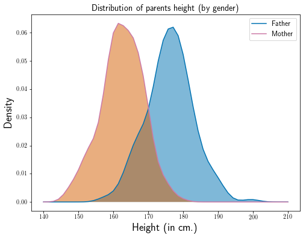
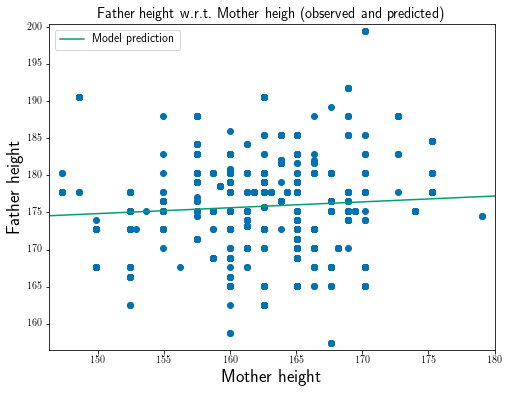
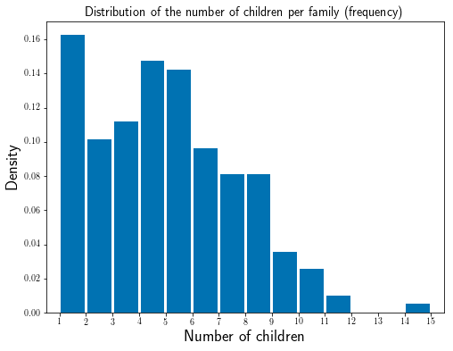

import numpy as npimport pandas as pdimport matplotlib.pyplot as pltfrom matplotlib import rcimport seaborn as snsfrom sklearn import linear_modelfrom sklearn.preprocessing import StandardScalerfrom statsmodels.nonparametric.kde import KDEUnivariatefrom scipy.stats import gaussian_kdeimport statsmodels.api as smfrom sklearn import linear_modelfrom sklearn.preprocessing import StandardScaler, PolynomialFeaturesfrom numpy.linalg import svdfrom IPython.display import HTMLfrom IPython.display import display%matplotlib inline# REM: LaTeX needs to be install on the machine for some# display to be fined
/home/jo/anaconda3/lib/python3.6/site-packages/statsmodels/compat/pandas.py:56: FutureWarning: The pandas.core.datetools module is deprecated and will be removed in a future version. Please use the pandas.tseries module instead.
from pandas.core import datetools
Le terme régression a été introduit par Sir Francis Galton (cousin de C. Darwin) alors qu’il étudiait la taille des individus au sein d’une descendance. Il tentait de comprendre pourquoi les grands individus d’une population semblaient avoir des enfants d’une taille plus petite, plus proche de la taille moyenne de la population; d’où l’introduction du terme “régression”.
Dans la suite on va s’intéresser aux données récoltées par Galton.
Q1: Loading, cm and rounding
Récupérer les données du fichier http://josephsalmon.eu/enseignement/TELECOM/MDI720/datasets/Galton.txt et les charger avec Pandas. On utilisera read_csv pour cela et on transformera les tailles en cm (pour cela on pourra consulter la description des données proposées en http://www.math.uah.edu/stat/data/Galton.html, en arrondissant sans chiffre après la virgule.
# Load dataurl ='http://josephsalmon.eu/enseignement/TELECOM/MDI720/datasets/Galton.txt'df = pd.read_csv(url, sep='\t')# Convert inches to cmdf[['Father', 'Mother', 'Height']] =2.54* df[['Father', 'Mother', 'Height']]pd.set_option('precision', 0)df.head()# Alternative:# df.round({'Father': 0, 'Mother': 0, 'Height': 0})# BEWARE: the display option does not necessarily affect the underlying float# values so, depending on the choice performed, there might be a (tiny)# difference in the estimators obtained latter on...
Family
Father
Mother
Gender
Height
Kids
0
1
199
170
M
186
4
1
1
199
170
F
176
4
2
1
199
170
F
175
4
3
1
199
170
F
175
4
4
2
192
169
M
187
4
Q2: Any Na in the dataframe?
Combien de données manquantes y-t-il dans cette base de données ? Enlever si besoin les lignes ayant des données manquantes.
null_data = df[df.isnull().any(axis=1)]print("There are "+str(df.isnull().sum().sum()) +' total missing values.')
There are 0 total missing values.
Conclusion : pas de données manquantes dans cette table.
Q3: Plot height density for Mothers and Fathers
Afficher sur un même graphe un estimateur de la densité de la population des pères en bleu, et de celles des mères en orange.
# Another possibility when the data has unique observations,# with gaussian_kde from scipy.statsfather_unique = df['Father'].groupby(df['Family']).first()mother_unique = df['Mother'].groupby(df['Family']).first()plt.figure()kde_father = gaussian_kde(father_unique)x_grid = np.linspace(140, 210)pdf_est_father = kde_father(x_grid)kde_mother = gaussian_kde(mother_unique)x_grid = np.linspace(140, 210)pdf_est_mother = kde_mother(x_grid)plt.plot(x_grid, pdf_est_father, color=my_blue, label='Father')plt.fill_between(x_grid, 0, pdf_est_father, facecolor=my_blue, alpha=0.5)plt.plot(x_grid, pdf_est_mother, color=my_purple, label='Mother')plt.fill_between(x_grid, 0, pdf_est_mother, facecolor=my_orange, alpha=0.5)plt.ylabel('Density', fontsize=18)plt.xlabel('Height (in cm.)', fontsize=18)plt.title("Distribution of parents height (by gender)")plt.legend()plt.show()

Q4: Plot Father height as a function of Mother height, with OLS prediction
Afficher la taille du père en fonction de la taille de la mère pour les n observations figurant dans les données. Ajouter la droite de prédiction obtenue par la méthode des moindres carrés (avec constante et sans centrage/normalisation).
plt.figure()y = df['Father']X = df[['Mother']]plt.plot(X, y, 'o',label="")plt.ylabel('Father height', fontsize=18)plt.ylim([df['Father'].min()-1, df['Father'].max()+1])plt.xlim([df['Mother'].min()-1, df['Mother'].max()+1])plt.xlabel('Mother height', fontsize=18)skl_lm = linear_model.LinearRegression(fit_intercept=True)skl_lm.fit(X, y)plt.plot(x_grid, skl_lm.predict(x_grid.reshape(x_grid.shape[0], 1)), '-', label='Model prediction')plt.legend()plt.title("Father height w.r.t. Mother heigh (observed and predicted)")plt.show()print(skl_lm.score(X, y)) # it is pretty small...

0.00542647493462
Q5: Distribution of the number of children by family
Afficher un histogramme du nombre d’enfants par famille.
# second solution : normed=Truegroupby_family = df['Family'].groupby(df['Family']).count()plt.figure()plt.hist(groupby_family, bins=14, normed=True, rwidth=0.9)plt.xlim([0.5, 15.5])plt.xticks(np.arange(1,16))plt.xlabel('Number of children', fontsize=18)plt.ylabel('Density', fontsize=18)plt.title("Distribution of the number of children per family (frequency)")plt.show()

# second solution : normed=Falseprint("There are {} families".format(len(df['Family'].unique())))groupby_family = df['Family'].groupby(df['Family']).count()plt.figure()plt.hist(groupby_family, bins=14, normed=False, rwidth=0.9)plt.xlim([0.5, 15.5])plt.xticks(np.arange(1,16))plt.xlabel('Number of children', fontsize=18)plt.ylabel("Count", fontsize=18)plt.title("Distribution of the number of children per family (count)")plt.show()
There are 197 families
Q6: MidParents creation
Créer une colonne supplémentaire appelée ‘MidParents’ qui contient la taille du sorte de “parent moyen”, et valant (‘Father’+ 1.08 * ‘Mother’) / 2.
REM: The factor 1.08 gives a rescaled women’s height variable which has the same average as the men’s height. Indeed, the ratio of the average men’s height over the average women’s height is
Ratio = np.mean(df['Father']) / np.mean(df['Mother'])
print(Ratio)
1.0803384317037383
Pour la i^{ieme} observation, on note x_i la taille du parent moyen et y_i la taille de l’enfant. On se base sur le modèle linéaire suivant: y_i = \theta_0 + \theta_1 x_i + \varepsilon_i et on suppose que les variables \varepsilon_i sont centrées, indépendantes et de même variance \sigma^2 inconnue.
Q7: Regression MidParents vs kids
Estimer \theta_0, \theta_1, par \hat{\theta}_0, \hat{\theta}_1 en utilisant la fonction LinearRegression de sklearn, puis vérifier numériquement (on pourra utiliser par exemple np.isclose) les formules vues en cours pour le cas unidimensionnel:
On fera attention aux normalisations utilisées pour la variance qui peuvent changer selon les packages.
X0 = df[['MidParents']]y = df['Height']skl_lm = linear_model.LinearRegression()skl_lm.fit(X0, y)theta0 = skl_lm.intercept_theta1 = skl_lm.coef_[0]y_mean = y.mean()X0_mean = (X0.mean(axis=0)).squeeze()X0_var = X0.var(ddof=0).squeeze()y_var = y.var(ddof=0)theta1_manual = ((X0.squeeze() - X0_mean) * (y - y_mean)).mean() / X0_vartheta0_manual = y_mean - theta1_manual * X0_meanprint(theta1)print(theta1_manual)print('Are the two computations of theta1'+' the same? This is {} and theta1={}'.format(np.isclose(theta1, theta1_manual),theta1))print('Are the two computations of theta0'+' the same? This is {}, and theta0={}'.format(np.isclose(theta0, theta0_manual),theta0))
0.641190379591
0.641190379591
Are the two computations of theta1 the same? This is True and theta1=0.6411903795908169
Are the two computations of theta0 the same? This is True, and theta0=56.83556243483079
Q8: Compute and display predictions with different colors by gender
Calculer et visualiser les valeurs prédites $y_i = _0 + _1 x_i $ et les y_i sur un même graphique. On affichera de deux couleurs différentes les garçons et les filles.
Visualiser un estimateur de la densité des résidus r_i = y_i -\hat y_i. L’hypothèse de normalité est-elle crédible selon vous? On ajoutera ensuite un estimateur par genre de la densité des résidus (en mettant un facteur proportionnel au nombre de personnes de chaque genre).
L’hypothèse de normalité globale des résidus n’est pas crédible (distribution bimodale). Cependant elle semble plus raisonnable si l’on fait l’étude séparement par genre.
Q10 : Inverting the model
Régresser cette fois les x_i sur les y_i (et non plus les y_i sur les x_i). Comparer les coefficients \hat{\alpha}_0 et \hat{\alpha}_1 obtenus par rapport aux \hat{\theta}_0 et \hat{\theta}_1 du modèle original. Vérifier numériquement que:
\begin{cases}
\hat{\alpha}_0=&\bar{x}_n+\displaystyle\frac{\bar{y}_n}{\bar{x}_n}\frac{var_n(x)}{var_n(y)}
(\hat{\theta}_0-\bar{y}_n), \\
\hat{\alpha}_1=&\frac{var_n(x)}{var_n(y)} \hat{\theta}_1 .
\end{cases}
skl_lm = linear_model.LinearRegression()skl_lm.fit(df[['Height']], df['MidParents'])alpha0 = skl_lm.intercept_alpha1 = skl_lm.coef_[0]alpha0_manual = X0_mean + y_mean / X0_mean * X0_var / y_var * (theta0 - y_mean)alpha1_manual = X0_var / y_var * theta1_manualprint(alpha1)print(alpha1_manual)print('Are the two computations of alpha1'+' the same? This is {}'.format(np.isclose(alpha1, alpha1_manual)))print('Are the two computations of alpha0'+' the same? This is {}'.format(np.isclose(alpha0, alpha0_manual)))
0.165038310213
0.165038310213
Are the two computations of alpha1 the same? This is True
Are the two computations of alpha0 the same? This is True
EXERCISE 2
On travaille dans cette partie sur le fichier auto-mpg.data. On cherche à régresser linéairement la consommation des voitures sur leurs caractéristiques: nombre de cylindres, cylindrées (engine displacement en anglais), puissance, poids, accélération, année, pays d’origine et le nom de la voiture.
Le vecteur contenant la consommation des voitures (plus précisément la distance parcourue, en miles, pour un gallon, ou mpg) est noté y; les colonnes de X sont les régresseurs quantitatifs, donc pour le moment on laisse de côté les variables origin et car name.
Q11: auto-mpg.data-original loading
Importer avec Pandas la base de données disponible ici https://archive.ics.uci.edu/ml/machine-learning-databases/auto-mpg/auto-mpg.data-original.
On ajoutera le nom des colonnes en consultant l’adresse: https://archive.ics.uci.edu/ml/machine-learning-databases/auto-mpg/auto-mpg.names avec l’attribut ‘name’ de read_csv. On pourra regarder l’intérêt de l’option sep=r”+“ si besoin.
Y a-t-il un marqueur utilisé pour les données manquantes dans le fichier utilisé? Si besoin, enlever les lignes possédant des valeurs manquantes dans la base de données.
# Load data# url = 'https://archive.ics.uci.edu/ml/machine-learning-databases/auto-mpg/' +\# 'auto-mpg.data-original'# Alternative URL when UCI is down:url ='http://josephsalmon.eu/enseignement/TELECOM/MDI720/datasets/auto-mpg.data-original'u_cols = ['mpg', 'cylinders', 'displacement', 'horsepower','weight', 'acceleration', 'model_year', 'origin', 'car_name']# To get correct display formatpd.options.display.float_format ='{:,.0f}'.format# for this dataset na_values are marked as NA.data = pd.read_csv(url, sep=r"\s+", names=u_cols, na_values='NA')n_samples_ini = data.shape[0]print("The original dataset has {} samples and {} features".format( data.shape[0], data.shape[1]))# Remove NA:data = data.dropna(axis=0, how='any')n_samples = data.shape[0]data.head()# To get origin with meaningful namesorigins = data['origin'].astype(str)origins = origins.str.replace('1.0', '1USA')origins = origins.str.replace('2.0', '2Europe')origins = origins.str.replace('3.0', '3Japan')data['origin'] = originsdata.head()
The original dataset has 406 samples and 9 features
mpg
cylinders
displacement
horsepower
weight
acceleration
model_year
origin
car_name
0
18
8
307
130
3,504
12
70
1USA
chevrolet chevelle malibu
1
15
8
350
165
3,693
12
70
1USA
buick skylark 320
2
18
8
318
150
3,436
11
70
1USA
plymouth satellite
3
16
8
304
150
3,433
12
70
1USA
amc rebel sst
4
17
8
302
140
3,449
10
70
1USA
ford torino
print("There are {} missing values (NA).".format(n_samples_ini - n_samples))
There are 14 missing values (NA).
Q12: OLS over a subset of the dataset
Calculer l’estimateur des moindres carrés (avec ordonnée à l’origine) \hat\theta et sa prédiction \hat{y} sur une sous partie de la base obtenue en gardant les 9 premières lignes. Que constatez-vous pour les variables cylinders et model year?
y = data['mpg']# data.drop(['mpg'], axis=1)X_partial = data.drop(['origin', 'car_name', 'mpg'], axis=1)# Fit regression model (with sklearn) degenerate caseskl_linmod = linear_model.LinearRegression()skl_linmod.fit(X_partial[:9], y[:9])print(X_partial.columns)print(skl_linmod.coef_)print(skl_linmod.intercept_)
Les coefficients des variables cylinders et model year sont nuls. Ceci est étrange, et vient du fait que le modèle est mal specifié. En effet, pour cette sous-partie de la base les colonnes de ces deux variables sont constantes et sont donc redondantes avec la colonnes constantes.
Q13: OLS over a full dataset after rescaling/centering
Calculer \hat\theta et \hat y cette fois sur l’intégralité des données, après les avoir centrées et réduites. Quelles sont les deux variables qui expliquent le plus la consommation d’un véhicule selon vous?
# Fit regression model (with sklearn)skl_linmod = linear_model.LinearRegression()scaler = StandardScaler().fit(X_partial)X = scaler.transform(X_partial)skl_linmod.fit(X, y)print(X_partial.columns)print(skl_linmod.coef_)# print(skl_linmod.intercept_)ranked_variables = np.argsort(np.abs(skl_linmod.coef_))print(X_partial.columns[ranked_variables[-2:]])
Les deux variables qui semblent les plus explicative de la consomation (d’après l’amplitudes de leurs coefficients de régression) sont l’ancienneté (model year) et le poids (weight) de la voiture.
Q14: Residual
Calculer \|r\|^2 (le carré de la norme du vecteur des résidus), puis \|r\|^2/(n-p). Vérifier numériquement que:
Supposons que l’on vous fournisse les caractéristiques suivantes d’un nouveau véhicule :
cylinders
displacement
horsepower
weight
acceleration
year
6
225
100
3233
15.4
76
Prédire sa consommation (pour information, la consommation effectivement mesurée sur cet exemple était de 22 mpg).
X_new = np.array([[6, 225, 100, 3233, 15.4, 76]])prediction_new = skl_linmod.predict(scaler.transform(X_new))[0]print("The consumption predicted is {} mpg.".format(prediction_new))print("This is {:.4}% away from the proposed value.".format( (100- (prediction_new /22.*100))))
The consumption predicted is 21.776220182609453 mpg.
This is 1.017% away from the proposed value.
Q16: Polynomial features.
Utiliser la transformation PolynomialFeatures de sklearn sur les données brutes, pour ajuster un modèle d’ordre deux (avec les termes d’interactions: interaction_only=False). On normalisera et recentrera après avoir créé les nouvelles variables explicatives. Quelle est alors la variable la plus explicative de la consomation?
Cette fois la variable la plus pertinente semble être “displacement”. C’est un paradoxe classique: en ajoutant de nouvelles variables (ici les produits de variables), il se peut que le classement par ordre d’influence des variables (mesuré par l’amplitude des coefficients) change. Ce problème est partiellement résolu par sélection de variables.
# BEWARE: it might lead to different interpretation if one perform the steps:# 1) center/rescale the design matrix# 2) create the interaction features# 3) center/rescale the new design matrix# or# 1) create the interaction features# 2) center/rescale the new design matrix.# The most reasonable is to rather proceed as proposed above (ie 2nd choice)
Q 17: Handling origins
On revient ici au modèle sans interactions. Proposer une manière de gérer la variable”origin” par exemple avec pd.get_dummies. On ajustera un modèle linéaire sans constante dans ce cas. Déterminer laquelle des trois origines est la plus efficace en terme de consommation (Pour info, 1 = usa; 2 = europe; 3 = japan).
# Solution 1: all origins, no intercpet, no rescalling.X_origin1 = data.copy().drop(['car_name', 'mpg'], axis=1)X_origin1 = pd.get_dummies(X_origin1, columns=['origin'])scaler = StandardScaler(with_mean=False,with_std=False).fit(X_origin1)Z1 = scaler.transform(X_origin1)skl_linmod1 = linear_model.LinearRegression(fit_intercept=False)skl_linmod1.fit(Z1, y)print(X_origin1.columns[6:])print(skl_linmod1.coef_[6:])
Beware: the result above wrongly suggests Europe is the best. But this is a scaling issue:
print(skl_linmod3.coef_[6:] / scaler.scale_[6:])print(np.allclose(skl_linmod3.coef_ / scaler.scale_, skl_linmod1.coef_))# Europe has more variability : because it has fewer samplesprint(scaler.scale_[6:])
Conclusion: we recover the same conclusion after a careful normalisation…
# best is to check t-statistics NOT the coefficients themselves:# cf. William H. Greene, Econometric analysis, Prentice Hall (2003), page 79, 4-14# cf. http://josephsalmon.eu/enseignement/TELECOM/MDI720/IntroTests_fr.pdfresults = sm.OLS(y, Z1).fit()print(X_origin1.columns[:])print(results.tvalues.values)
Procéder de même cette fois en fonction de la marque de la voiture. On pourra utiliser str.split et str.replace pour créer une nouvelle variable ‘brand’.
car_names = data['car_name']brands = pd.Series(car_names.str.split().str.get(0))# A bit of cleaning:brands = brands.str.replace('volkswagen', 'vw', case=False)brands = brands.str.replace('vokswagen', 'vw', case=False)brands = brands.str.replace('toyouta', 'toyota', case=False)brands = brands.str.replace('maxda', 'mazda', case=False)brands = brands.str.replace('chevy', 'chevrolet', case=False)brands = brands.str.replace('chevroelt', 'chevrolet', case=False)brands = brands.str.replace('mercedes-benz', 'mercedes', case=False)brands = brands.str.replace('capri', 'ford', case=False)brands = brands.str.replace('datsun', 'nissan', case=False)brands = brands.str.replace('dodge', 'chrysler', case=False)data['brand'] = pd.Series(brands)X_brand = data.drop(['car_name', 'mpg', 'origin'], axis=1)X_brand = pd.get_dummies(X_brand, columns=['brand'], drop_first=False)# NOTE: the first in alphabetical order is amc: if drop_first=True, that's the one removed.print("Number of cars per brand:")print(data['brand'].value_counts())scaler = StandardScaler(with_mean=False, with_std=False).fit(X_brand)X_brand_scaled = scaler.transform(X_brand)skl_linmod = linear_model.LinearRegression(fit_intercept=False)skl_linmod.fit(X_brand_scaled, y)# sort by negative influence over the coefficients:brands = X_brand.columns[6:]coef_brands = skl_linmod.coef_[6:]rank_variables = np.argsort(coef_brands)print("")print("Brands by increasing coefficients:")print(brands[rank_variables])print(coef_brands[rank_variables])
Number of cars per brand:
ford 49
chevrolet 47
chrysler 34
plymouth 31
amc 27
toyota 26
nissan 24
vw 22
buick 17
pontiac 16
honda 13
mazda 12
mercury 11
oldsmobile 10
fiat 8
peugeot 8
audi 7
volvo 6
opel 4
subaru 4
saab 4
renault 3
mercedes 3
bmw 2
cadillac 2
triumph 1
hi 1
Name: brand, dtype: int64
Brands by increasing coefficients:
Index(['brand_amc', 'brand_mercury', 'brand_ford', 'brand_buick',
'brand_chevrolet', 'brand_volvo', 'brand_chrysler', 'brand_opel',
'brand_bmw', 'brand_oldsmobile', 'brand_plymouth', 'brand_pontiac',
'brand_mazda', 'brand_saab', 'brand_subaru', 'brand_toyota',
'brand_peugeot', 'brand_cadillac', 'brand_audi', 'brand_renault',
'brand_hi', 'brand_mercedes', 'brand_fiat', 'brand_vw', 'brand_honda',
'brand_nissan', 'brand_triumph'],
dtype='object')
[-15.8448334 -15.37441593 -15.08920332 -14.50317471 -14.48617161
-14.25639745 -14.04276501 -13.5846621 -13.58250469 -13.33139153
-13.07055588 -12.88460789 -12.69522852 -12.54530737 -12.46089461
-12.42248327 -12.19739697 -11.78508034 -11.74517299 -11.49121929
-11.28489187 -11.20006111 -11.10051666 -10.98287058 -10.73670551
-10.08042111 -7.31920326]
# Sorted by negative influence over the tvalues:results = sm.OLS(y, X_brand_scaled).fit()brands = X_brand.columns[6:]ttest_brands = results.tvalues.values[6:]rank_variables = np.argsort(ttest_brands)print(brands[rank_variables])print(ttest_brands[rank_variables])
The most favorable influence is from the triumph brand, but the worst is coming from amc.
# Illustration of what would be the prediction for one car if the brand# was substituted by another one. This will illustrate that the Triumph# "would" make a more efficient car that any other brand for the car# considered.brands_df = pd.Series(brands, name="brands").str.replace('brand_', '', case=False)for i, brand_name inenumerate(brands_df): X_to_pred = X_brand_scaled[28].copy() X_to_pred[6+9] =0. X_to_pred[6+ i] =1.print("If the hi car's brand was {}, \n then instead of {}, the its consumption would be {:.4}".format(brand_name, y.iloc[28], skl_linmod.predict(X_to_pred.reshape(1, -1))[0]))
If the hi car's brand was amc,
then instead of 9.0, the its consumption would be 4.44
If the hi car's brand was audi,
then instead of 9.0, the its consumption would be 8.54
If the hi car's brand was bmw,
then instead of 9.0, the its consumption would be 6.702
If the hi car's brand was buick,
then instead of 9.0, the its consumption would be 5.782
If the hi car's brand was cadillac,
then instead of 9.0, the its consumption would be 8.5
If the hi car's brand was chevrolet,
then instead of 9.0, the its consumption would be 5.799
If the hi car's brand was chrysler,
then instead of 9.0, the its consumption would be 6.242
If the hi car's brand was fiat,
then instead of 9.0, the its consumption would be 9.184
If the hi car's brand was ford,
then instead of 9.0, the its consumption would be 5.196
If the hi car's brand was hi,
then instead of 9.0, the its consumption would be 9.0
If the hi car's brand was honda,
then instead of 9.0, the its consumption would be 9.548
If the hi car's brand was mazda,
then instead of 9.0, the its consumption would be 7.59
If the hi car's brand was mercedes,
then instead of 9.0, the its consumption would be 9.085
If the hi car's brand was mercury,
then instead of 9.0, the its consumption would be 4.91
If the hi car's brand was nissan,
then instead of 9.0, the its consumption would be 10.2
If the hi car's brand was oldsmobile,
then instead of 9.0, the its consumption would be 6.954
If the hi car's brand was opel,
then instead of 9.0, the its consumption would be 6.7
If the hi car's brand was peugeot,
then instead of 9.0, the its consumption would be 8.087
If the hi car's brand was plymouth,
then instead of 9.0, the its consumption would be 7.214
If the hi car's brand was pontiac,
then instead of 9.0, the its consumption would be 7.4
If the hi car's brand was renault,
then instead of 9.0, the its consumption would be 8.794
If the hi car's brand was saab,
then instead of 9.0, the its consumption would be 7.74
If the hi car's brand was subaru,
then instead of 9.0, the its consumption would be 7.824
If the hi car's brand was toyota,
then instead of 9.0, the its consumption would be 7.862
If the hi car's brand was triumph,
then instead of 9.0, the its consumption would be 12.97
If the hi car's brand was volvo,
then instead of 9.0, the its consumption would be 6.028
If the hi car's brand was vw,
then instead of 9.0, the its consumption would be 9.302
Pour aller plus loin : https://perso.univ-rennes1.fr/bernard.delyon/regression.pdf ( I.2.8 Traitement des variables catégorielles)
Q19
Reprendre la matrice X obtenue sans variables catégorielles. Obtenez numériquement la SVD (partielle) de X = U S V^\top (par exemple en considérant l’option full_matrices=False); vérifier numériquement que $H = U U^$ est une projection orthogonale (on admettra si besoin que c’est la matrice chapeau, H, vue en cours).
# TODO: TO improve and may be give a standard threshold as in Delyon ...U, s, V = svd(X, full_matrices=False)proj_mat = np.dot(U, U.T)print(np.allclose(proj_mat.dot(proj_mat), proj_mat))print(np.allclose(proj_mat.T, proj_mat))# Rem: Note that the centering/rescaling step does not modify the leverage.leverage = np.diag(proj_mat)data['leverage'] = leverage
True
True
Q20:
La diagonale de la matrice H, forme le vecteur des “leviers”, qu’on ajoutera comme nouvelle variable. Trier la base de données en fonction de cette variable, et expliquer en quoi les voitures ayant les trois valeurs de “levier” les plus grandes semblent atypiques.
data = data.sort_values(['leverage'], ascending=False)display(HTML(data.describe().to_html(formatters={'leverage': '{:,.3f}'.format})))display(HTML(data.head(6).to_html(formatters={'leverage': '{:,.3f}'.format})))
mpg
cylinders
displacement
horsepower
weight
acceleration
model_year
leverage
count
392
392
392
392
392
392
392
392.000
mean
23
5
194
104
2,978
16
76
0.015
std
8
2
105
38
849
3
4
0.014
min
9
3
68
46
1,613
8
70
0.002
25%
17
4
105
75
2,225
14
73
0.008
50%
23
4
151
94
2,804
16
76
0.012
75%
29
8
276
126
3,615
17
79
0.018
max
47
8
455
230
5,140
25
82
0.187
mpg
cylinders
displacement
horsepower
weight
acceleration
model_year
origin
car_name
brand
leverage
19
14
8
455
225
3,086
10
70
1USA
buick estate wagon (sw)
buick
0.187
34
9
8
304
193
4,732
18
70
1USA
hi 1200d
hi
0.085
32
10
8
307
200
4,376
15
70
1USA
chevy c20
chevrolet
0.062
33
11
8
318
210
4,382
14
70
1USA
dodge d200
chrysler
0.061
8
14
8
455
225
4,425
10
70
1USA
pontiac catalina
pontiac
0.059
307
24
8
260
90
3,420
22
79
1USA
oldsmobile cutlass salon brougham
oldsmobile
0.055
Conclusion: - L’observation de levier maximum a des valeurs extrêmes pour: ‘cylinders’, ‘displacement’ et ‘model_year’ - L’observation de deuxième levier maximum a des valeurs extrêmes pour: ‘cylinders’, ‘weight’, ‘acceleration’, ‘horsepower’ et ‘model_year’ - L’observation de deuxième levier maximum a des valeurs extrêmes pour: ‘cylinders’, ‘horsepower’, ‘weight’ and ‘model_year’
# Bonus: visualisation of the leverage points with empirical cut-off for "large" leverage pointsthreshold =2.5* (float(X.shape[1] +1) /float(X.shape[0]))plt.figure()plt.plot(np.arange(X.shape[0]), leverage, label="Leverage")plt.plot(np.arange(X.shape[0]), threshold * np.ones(X.shape[0]), label="threshold")plt.legend()plt.title("Leverage points with empirical cut-off")plt.show()